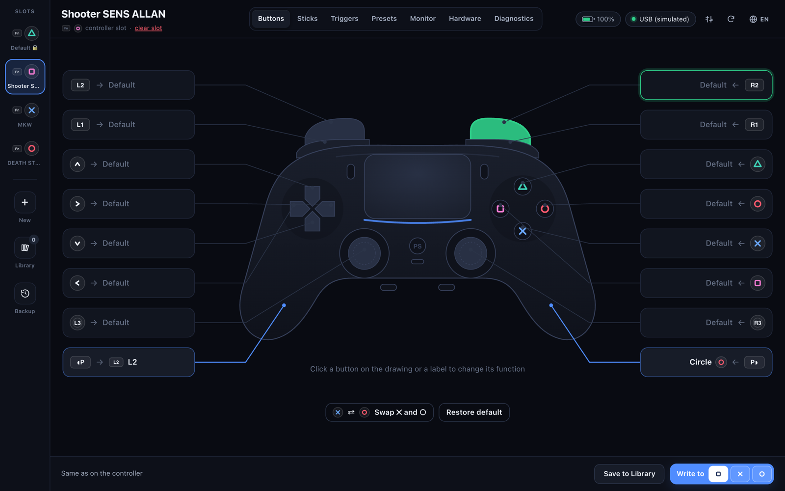
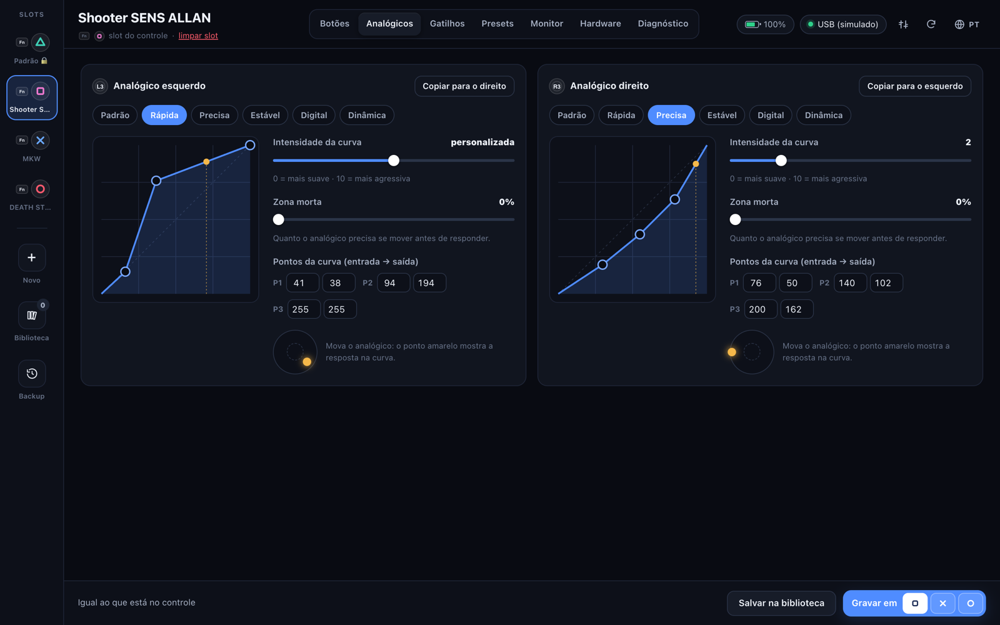
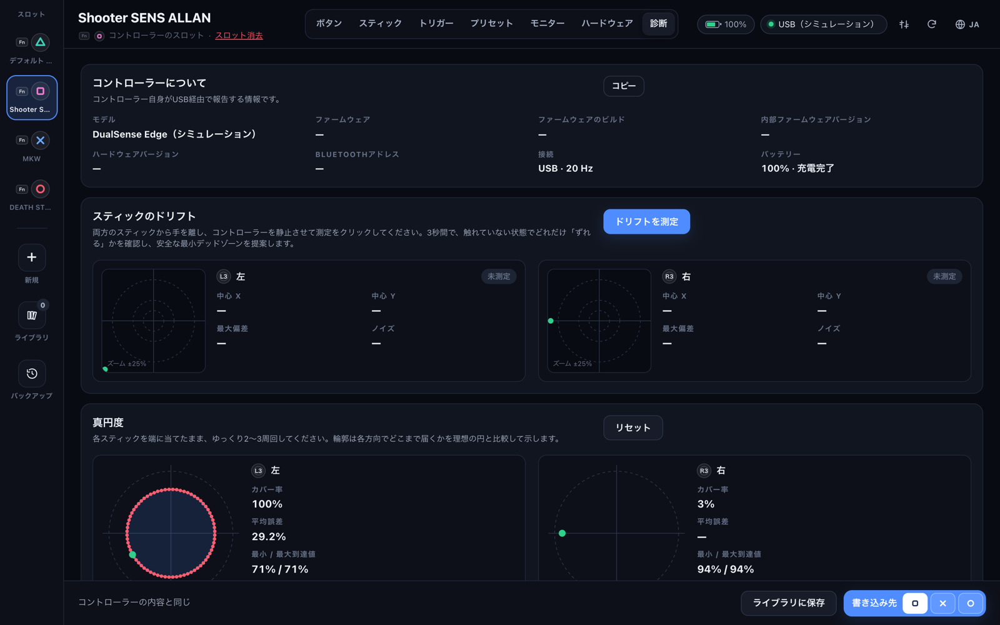
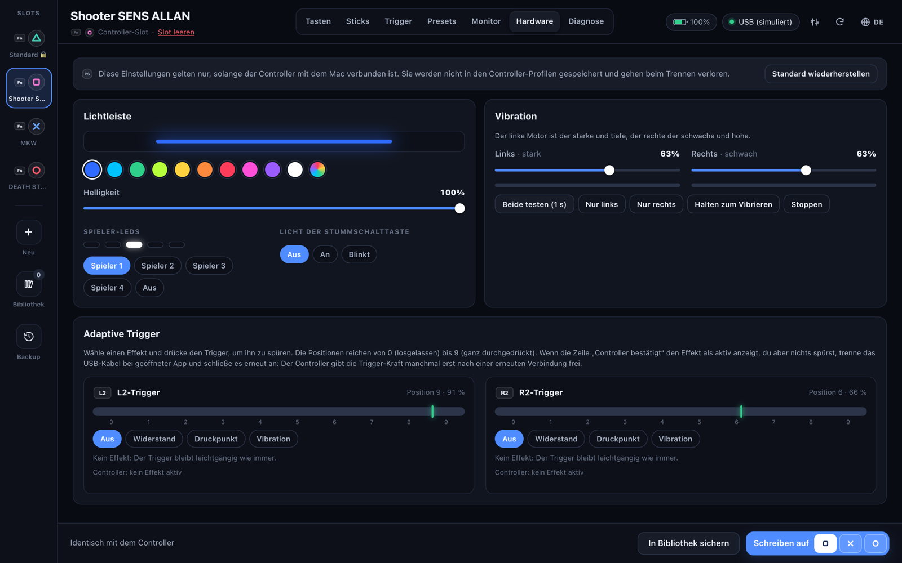

Your DualSense Edge,
tuned from your Mac.
Seu DualSense Edge,
ajustado pelo Mac.
Read and write the controller's on-board profiles over USB — remap every button and paddle, reshape stick curves, cut trigger travel. No PS5 and no browser needed. Leia e grave os perfis do próprio controle via USB — remapeie todos os botões e paddles, mude as curvas dos analógicos, corte o curso dos gatilhos. Sem PS5 e sem navegador.

Everything the PS5 menu does — and moreTudo o que o menu do PS5 faz — e mais
Changes are a draft until you write them. Nothing reaches the controller until you click Write to □ / ✕ / ○. As mudanças são um rascunho até você gravar. Nada chega ao controle até você clicar em Gravar no □ / ✕ / ○.
Buttons & paddlesBotões e paddles
All 16 buttons remappable. Click the drawing, or just press the button you want on the controller.Os 16 botões remapeáveis. Clique no desenho, ou só aperte o botão desejado no controle.
Stick curvesCurvas dos analógicos
The 6 PS5 curves, intensity, dead zone, and a free-form curve you shape by dragging points — with a live preview.As 6 curvas do PS5, intensidade, zona morta e uma curva livre que você molda arrastando pontos — com prévia ao vivo.
TriggersGatilhos
Set the usable range of L2 and R2, optionally linked so both share the same settings.Defina o curso útil de L2 e R2, opcionalmente vinculados para usarem a mesma configuração.
PresetsPresets
FPS, Battle Royale, Racing, Fighting, Sports and Accessibility templates, a random preset, or another profile's settings.Modelos de FPS, Battle Royale, Corrida, Luta, Esportes e Acessibilidade, um preset aleatório, ou as configurações de outro perfil.
Live monitorMonitor ao vivo
Gyro with a 3D controller, two-finger touchpad with trails, every button, the raw report and rumble.Giroscópio com controle 3D, touchpad com dois dedos e rastro, todos os botões, o report bruto e a vibração.
HardwareHardware
Light bar, player and mute LEDs, each rumble motor, and adaptive-trigger effects — live while connected.Light bar, LEDs de jogador e do mudo, cada motor de vibração e efeitos de gatilho adaptável — ao vivo enquanto conectado.
DiagnosticsDiagnóstico
Measures stick drift and suggests a dead zone in one click. Circularity, real trigger range, 1000 Hz USB rate, firmware.Mede o drift e sugere uma zona morta com um clique. Circularidade, curso real dos gatilhos, taxa USB de 1000 Hz, firmware.
Library & backupBiblioteca e backup
Profiles saved on your Mac, full 4-slot backups and an automatic history before every write — undo in one click.Perfis salvos no Mac, backup completo dos 4 slots e um histórico automático antes de cada gravação — desfaz com um clique.
Compare profilesComparar perfis
Two profiles side by side with differences highlighted, and “Copy B → A” for one part or everything.Dois perfis lado a lado com as diferenças destacadas, e “Copiar B → A” para uma parte ou tudo.
Menu barBarra de menus
Battery and active profile at a glance, low-battery alerts at 20% and 10%, and an option to keep running when the window closes.Bateria e perfil ativo num relance, alertas de bateria em 20% e 10%, e opção de continuar rodando com a janela fechada.
edge-config.com compatibleCompatível com edge-config.com
JSON import/export in the same format as the edge-config.com web editor, so libraries move freely between them.Importação/exportação JSON no mesmo formato do editor web edge-config.com, então as bibliotecas transitam entre os dois.
Keyboard firstAtalhos de teclado
⌘N new profile, ⌘S save to library, ⌘1–⌘7 switch tabs.⌘N novo perfil, ⌘S salvar na biblioteca, ⌘1–⌘7 trocar de aba.
Get started in a minuteComece em um minuto
Profiles can only be edited over a USB cable — same as on the PS5.Os perfis só podem ser editados por cabo USB — igual no PS5.
InstallInstalar
- Download
DualSense-Edge-Studio.dmg.Baixe oDualSense-Edge-Studio.dmg. - Open it and drag DualSense Edge Studio onto Applications.Abra e arraste o DualSense Edge Studio para Aplicativos.
- If macOS blocks access to the controller, allow the app in System Settings › Privacy & Security › Input Monitoring.Se o macOS bloquear o acesso ao controle, permita o app em Ajustes do Sistema › Privacidade e Segurança › Monitoramento de Entrada.
First profilePrimeiro perfil
- Connect the controller with a USB cable and open the app.Conecte o controle com um cabo USB e abra o app.
- Pick a slot (□ ✕ ○) or create a new profile with
⌘N.Escolha um slot (□ ✕ ○) ou crie um perfil novo com⌘N. - Adjust buttons, sticks and triggers, then click Write to □ / ✕ / ○.Ajuste botões, analógicos e gatilhos e clique em Gravar no □ / ✕ / ○.
- On the controller, switch profiles with FN + □ / ✕ / ○.No controle, troque de perfil com FN + □ / ✕ / ○.
Built to be safe with your controllerFeito para ser seguro com o seu controle
Writing a profile changes the controller's memory, so the guard rails live in the native code, not just the UI.Gravar um perfil altera a memória do controle, então as proteções ficam no código nativo, não só na interface.
What it will never touchO que ele nunca toca
- The △ slot (default profile) is read-only.O slot △ (perfil padrão) é somente leitura.
- The firmware is never written.O firmware nunca é gravado.
- Only the profile-write and clear-slot reports are accepted; anything else is rejected before it reaches the controller.Só os reports de gravar perfil e limpar slot são aceitos; qualquer outro é rejeitado antes de chegar ao controle.
How you get backComo voltar atrás
- Every write, clear or restore first saves the slot to the history.Toda gravação, limpeza ou restauração salva o slot no histórico antes.
- Fields the app doesn't edit are preserved byte for byte.Campos que o app não edita são preservados byte a byte.
- Validated on a real controller: a PS5-saved profile re-encodes to exactly the same bytes and CRC.Validado num controle real: um perfil salvo pelo PS5 recodifica para exatamente os mesmos bytes e CRC.
Speaks 9 languagesFala 9 idiomas
Starts in your system language; switch any time with the 🌐 button.Abre no idioma do sistema; troque quando quiser pelo botão 🌐.



English · Português · Español · Français · Deutsch · Italiano · Русский · 简体中文 · 日本語
RequirementsRequisitos
- macOS 12 Monterey or later, Apple Silicon or Intel.macOS 12 Monterey ou mais novo, Apple Silicon ou Intel.
- A DualSense Edge connected with a USB cable (Bluetooth can't edit profiles).Um DualSense Edge conectado por cabo USB (Bluetooth não edita perfis).
Open sourceCódigo aberto
- MIT license. Objective-C + plain HTML/JS, no dependencies.Licença MIT. Objective-C + HTML/JS puro, sem dependências.
- Docs: user guide · USB protocol · changelog.Docs: guia de uso · protocolo USB · changelog.
- The story behind it: blog post.A história por trás: post no blog.